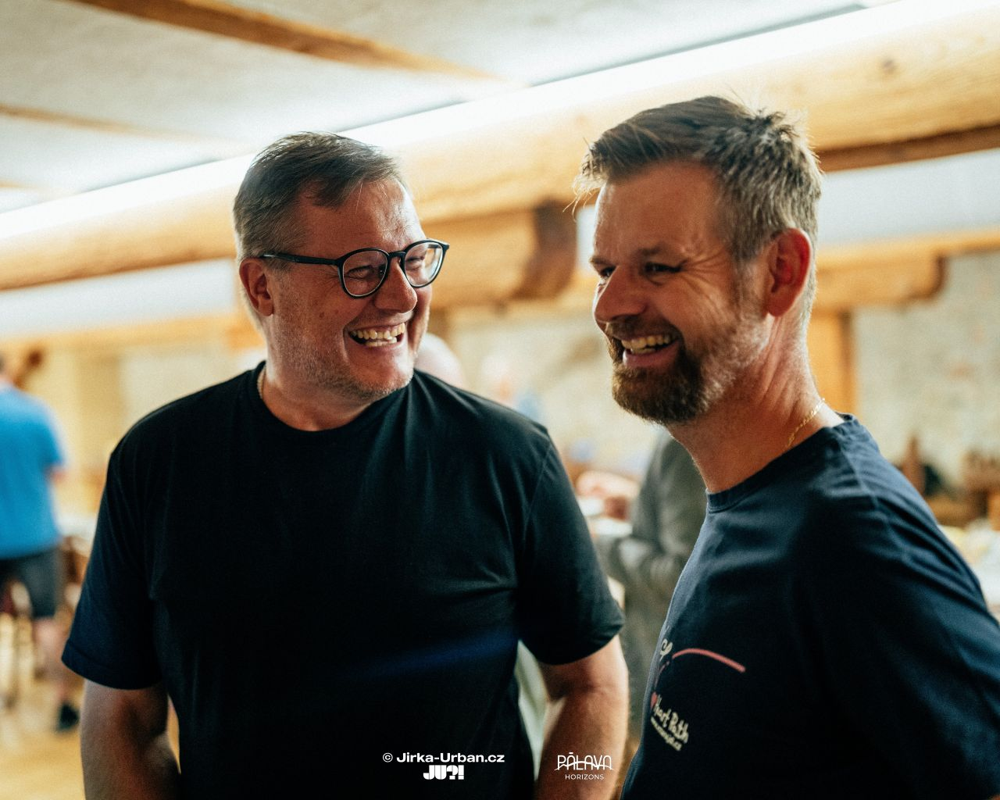
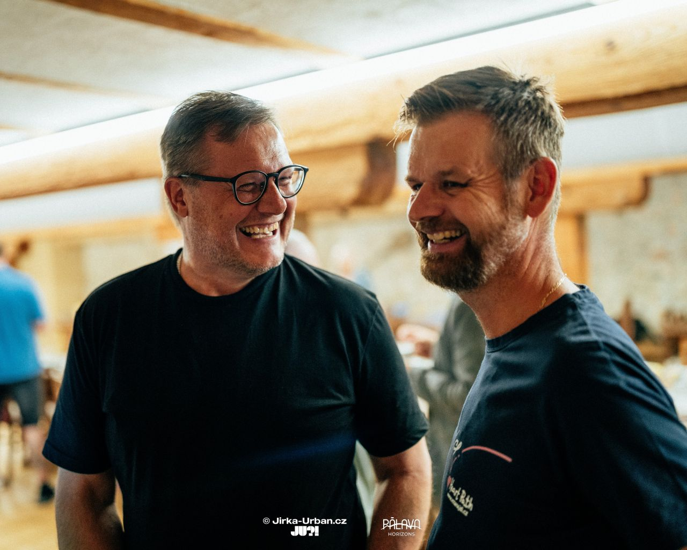

A Look Back at the 12th Meeting of the Pod Pálavou Club
On the morning of Tuesday, September 2, the 12th meeting of our business community, Pod Pálavou, took place in the picturesque setting of the Krčma a hotel u Císařské cesty in Branišovice. Veronika Jankovičová guided us through the morning, capturing the main idea of our gatherings right at the start:
"It is incredibly important that we shape each other, that we hold up mirrors to one another."
According to her, this idea is the foundation of true networking. It's not just about exchanging business cards, but about mutual inspiration in the details – in how we work, how we present ourselves, or how we find joy in life. It is this willingness to be an example for one another that gives our community its real value.

The entire morning was carried in the spirit of this dialogue. Veronika gradually gave the floor to key members to present the club's pillars. Jiří Juránek spoke about our mission and vision, Gabriel Kožík introduced the code of ethics, and Pavel Herman reflected on the connection between business and friendship. Of course, each of us had the opportunity to introduce our companies and projects.
Instead of classic lectures, this time we delved into a practical workshop. Gabriel Kožík guided us through the world of AI tools and their real-world application in business. Tomáš Hampl took care of the future direction, enticing us with attractive technological improvements that await us in the fall.
Finally, as always, we had a second round of words. The feedback in the form of Talk and Reflect was led by Radek Osička, but we'll talk about how that went next time. Thank you all for a morning full of great ideas and new connections.
You can recall yesterday's club atmosphere with the photos from Jirka Urban.


 

Join us next time!
The next meeting will take place on September 16, 2025, from 9:00 AM to 12:00 PM, again at the Krčma a hotel u Císařské cesty.
REGISTER HERE Add to calendar